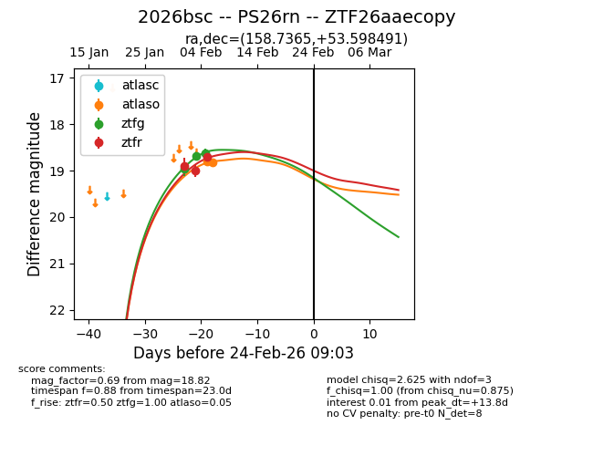
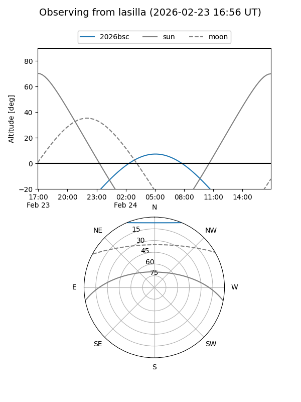
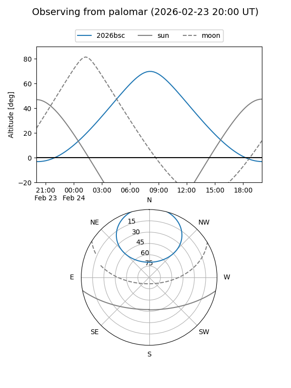
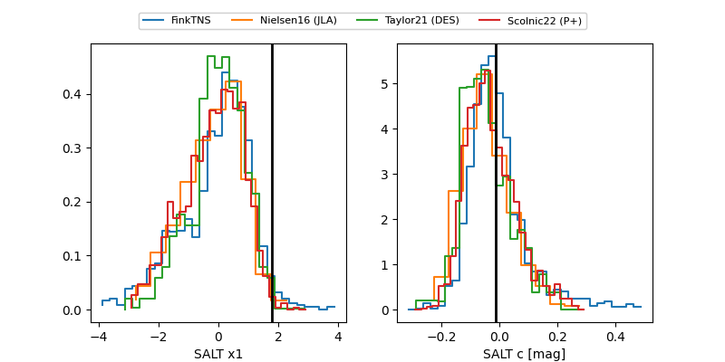

2026bsc
Target 2026bsc at 2026-02-24 09:08
Aliases and brokers:
FINK: link
Lasair: link
ALeRCE: link
TNS: link
YSE: link
alt names
ZTF26aaecopy (ztf,fink_ztf)
2026bsc (tns,yse)
PS26rn (panstarrs)
Coordinates:
equatorial (ra, dec) = 158.7365,+53.59849
equatorial (HMS+DMS) = 10:34:56.76,+53:35:54.57
galactic (l, b) = (156.9981,+53.53659)
Flags:
Photometry:
last atlaso=18.82, ztfg=18.63, ztfr=18.71
2 atlaso, 3 ztfg, 3 ztfr detections
Lightcurve

Visibility


Additional plots
